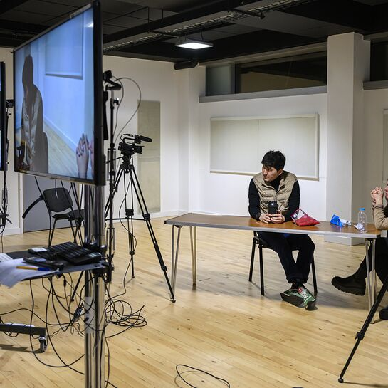

Step Into
the Frame.
Truth. Choice. Story.
Private screen acting coaching for actors who want practical craft, camera evidence, and stronger work on camera.
Why this work
Clear craft for the camera.
Access is built around the gap between what an actor experiences internally and what the audience receives through the frame.
Actors learn to access truthful behaviour and shape it with purpose in service of the story.
The work joins practical acting technique with camera evidence: scene preparation, filmed takes, playback, direct notes, adjustment, and disciplined repetition.
Training model
Focused work, built around the actor.

Private Coaching
Scene work, technique, camera craft, audition preparation, and direct notes shaped around the actor’s immediate need.
- Mode
- Sydney or online
- Focus
- Craft and evidence

Auditions
Scene preparation, playable choices, camera adjustment, and direct coaching for stronger auditions and self-tapes.
- Mode
- By enquiry
- Focus
- Prepared performance

Self-Tapes
Text work, playable choices, redirects, camera setup, and performance adjustment before submission.
- Mode
- Fast enquiry
- Focus
- Submission-ready work

Actor Development Plan
A structured coaching pathway for actors who want continuity, clear priorities, and measurable growth across craft, camera work, and professional readiness.
- Mode
- By enquiry
- Focus
- Long-term growth
The Access Method
Method and workbook.
The Access Method is the studio’s working process for turning script analysis into behaviour the camera can receive.
It gives actors a way to move from first reading to scene choices, filmed takes, playback, and repeatable adjustment.
Access the Method
Access Method Workbook
Use the guided workbook for scene prep, beat work, rehearsal runs, playback review, technique reference, and export or print.
The Access Standard
Stop obsessing over your emotions in a scene. What matters is what you make the audience feel.
Robert Rosina
Next step
Bring the work into focus.
Send your current need, your experience level, and any links to existing material. Access will recommend a practical coaching pathway.
Send enquiry